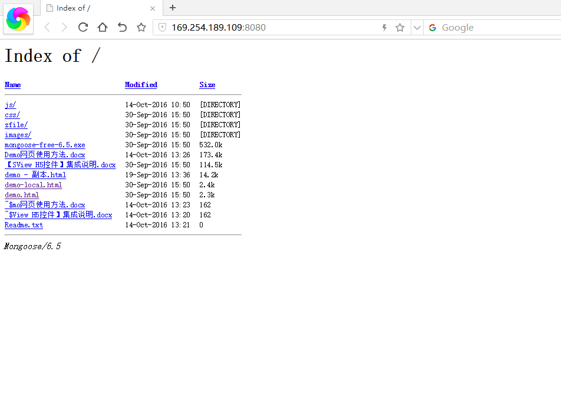
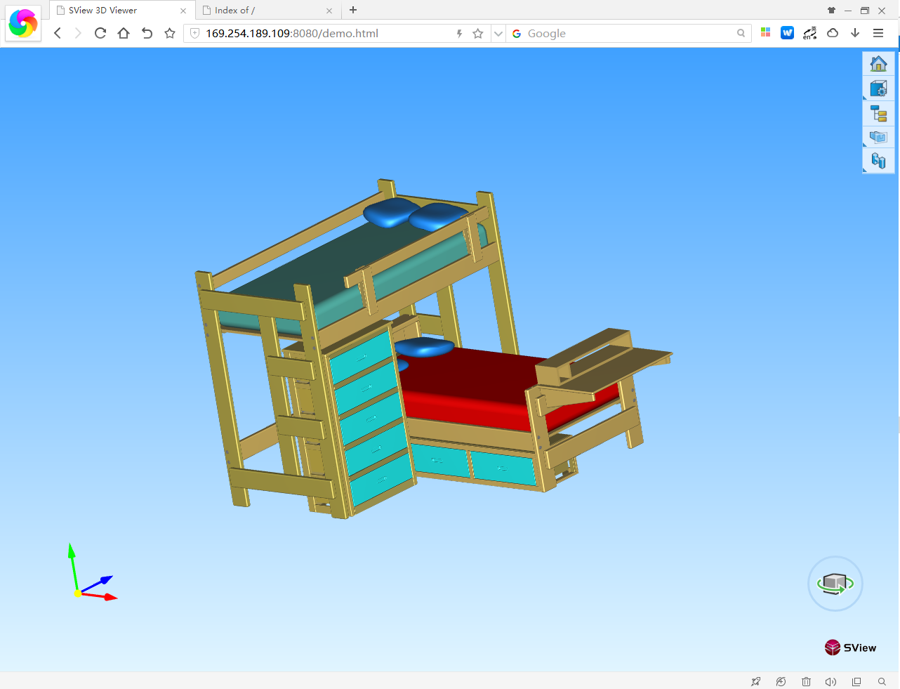

概述
SView for HTML5 控件提供三维模型基本的浏览、基本三维对象操作、动画播放、颜色设置等功能的实现接口，可实现基本的三维模型展示功能，以便于用户个性化定制属于自己的产品。
集成准备
集成之前需要熟悉javascript、HTML语言及常用网页代码编辑软件，以便快速准确的集成相关功能界面。详细集成准备如下所示:
集成环境
SView for HTML5 开发库集成需要的环境：
- 开发环境：常用前端代码编辑器
- 系统环境: macOS、Linux、windows
- 运行环境: IE、edge、chorme、firefox等支持html5的浏览器
集成说明
请按照下面步骤进行集成
具体步骤
<link href="css/bootstrap.css" rel="stylesheet" media="screen" >
<link href="css/common.css" rel="stylesheet">
<link href="css/zTreeStyle/zTreeStyle.css" rel="stylesheet" type="text/css">
<script src="js/Detector.js"></script>
<script src="js/m3d_debug.js"></script>
<script src="js/jquery-3.1.0.min.js" type="text/javascript"></script>
<script src="js/sview.1.0.7.5.js" type="text/javascript"></script>
<script src="js/bootstrap.min.js" type="text/javascript"></script>
<script src="js/bootstrap-contextmenu.js"></script>//右键菜单
<script src="js/zTree/jquery.ztree.core-3.5.js"></script>
<script src="js/zTree/jquery.ztree.excheck-3.5.js"></script>
<script src="js/zTree/jquery.ztree.exedit-3.5.js"></script>
<script src="js/jszip/jszip.min.js"></script<script src="js/jszip/jszip-utils.min.js"></script>
if (!Detector.webgl) {
Detector.addGetWebGLMessage();
}
var sview0 = null;
$(function() {
sview0 = initSView("sview0");
try {
//参数1使用转换后的jsvl和bin文件的压缩包网址。
//参数2说明是否为zip包
//参数3为压缩包内的文件名称，可能与压缩包名不一致
//参数4是文件格式
//中文时需增加服务端utf-8路径配置。
sview0.OpenRemote("zfile/R&H00007.zip", true, "", "obj");//单个文件
//多个文件逻辑
var urls = [
];
//打开多个文件
//sview0.OpenRemotes(urls,"topAssembly"/*指定顶级的名称*/, "jsvl");
} catch (e) {
alert("无法正常打开，请检查原始模型是否正确或联系客服人员！");
$("#jdzw").css("width", "100%");
$("#jdz").html("无法正常打开，请检查原始模型是否正确或联系客服人员！");
}
});
Demo使用说明

